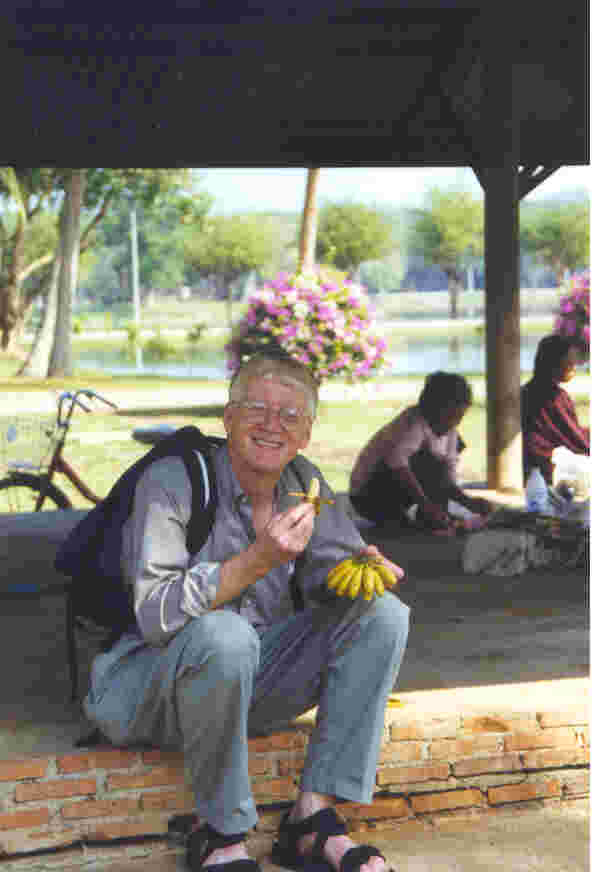

Jack Fleming 
"Don't Panic"
Contents
Current Projects
Current Reading List
I was born in Iowa in 1951 and grew up in Cedar Falls, Iowa. Undefeated as a junior high and high school wrestler (ok, ok, it was only 4-0 in 6 (yes - 6!) years of junior varsity service... not like cross-town rival West Waterloo's Dan Gable...). College at the University of Northern Iowa from 1969 to 1976 (majors in Teaching English, Teaching History, and Teaching English as a Foreign Language).
Extensive travel experience 18 months around the world at age 21-22, other trips to Europe, Africa, Mexico, South America, Southeast Asia, etc. Due to a moral decision I didn't drive a car between 1972 and 2001 - now I'm back on the road. Rode a bicycle from Iowa to Seattle and back to Iowa in 1974. Currently working as the Executive Assistant for the Chief Operating Officer at Swedish Medical Center in Seattle, Washington.
Married to Paula Rodriguez in 1993 and am step-father to Jennifer (currently living in Chile) and Nicole (currently living in Switzerland). Home life includes 6 cats...
Genealogy
Reading
Last Revised: April 6, 2003